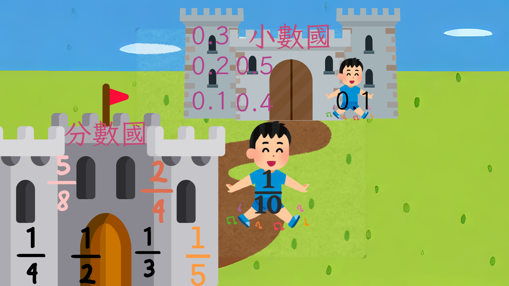

用 iPad 與數位資源打造中低年級數學
「有感」課堂
適合對象：全國國小中低年級數學教師、資訊融入教學社群
特色主題：iWork實戰案例 ✕ AI Agent共作網頁歷程
中年級共備社群種子教師
致力於推動數學共備與行動學習，將 iPad ✕ iWork 技術融入課堂，為中低年級打造「有感」的數學探究環境。
- 國小數學社群共同發起人與研習講師
- 「魔法分數烘培屋」入口傳送門與遊戲共作開發
💡 現場互動：本簡報內嵌了我們共作的分數、小數以及 iWork 條件式反白互動元件，投影片播放時即可現場示範！
請選擇題目並輸入關鍵詞（稍後將與 Firebase 資料庫連線）：
❓ 題目一：在您班上，中低年級孩子學習數學時，最讓您頭痛的「卡關概念」是哪一個？
...
學生常常一放長假，概念就 Reset 了？
傳統的低中高數學教學高度依賴「背誦公式」與「反覆紙筆計算」，這常導致：
- 流於步驟記憶：學生能寫出直式，但不知道「為什麼這樣對齊」或「為什麼要借位」。
- 缺乏具體量感：數字在大腦中是抽象孤立的，沒有對應的實物模型（量感薄弱）。
- 概念容易遺忘：因為死記硬背，放完連假或寒暑假，先前所學的規則極易被自動清除。
「會算不會說」的危機
如果孩子只學會了計算規約，卻說不出數學背後的道理，那他的數學知識只是建立在流沙上：
- 無法遷移到新題目：題目敘述一變形，或者情境稍微調整，學生立刻不知如何列式。
- 無法自我檢驗糾錯：因為不知道每一步算出來的意義，算錯時也無從發現答案的荒謬性。
⚠️ 共備手冊重點提示：
「在課堂上，我們應要求學生一邊操作一邊口述。說得出邏輯的知識，才是能帶得走的真正能力。這就是為什麼我們要推動『說數學』和引導具體『心象』。」
在面對不會的題目時，如何引導學生從卡關走向看懂？
要讓數學課堂「有感」，許主任建議引導孩子建立以下思考模型：
- 讀懂題目：從圈選重點開始，抓出核心單位與數量關係，培養自主審題能力。
- 文字轉成圖：建立具體「心象」與量感。秉持「知道什麼畫什麼」，先畫出已知線索。
- 文字轉算式：將圖形心象轉為抽象算式。秉持「知道什麼寫什麼」，讓計算列式有理可循。
- D咖輔導策略：從「先聽再說」開始。先聆聽同學說理，再試著重複他人邏輯，建立說數學的自信。
💡 許主任心法工作流
分數教學的頭號殺手：單位混淆
在中年級分數教學中，最大的混亂來源就是單位，我們可以使用以下策略：
- 單位管理 (Unit Management)： 每一道分數題目，上課時應限制只能出現兩種單位：整體一的大單位與單位分數的小單位（例如：111 條中的一小份）。
- 「兩個名字」策略（核心）： 引導孩子明瞭同一個物體具有兩個名字。例如：平分成 10 份的果凍中，1個果凍叫做「1個」（個數名字），也叫「110 盒」（分數名字）。
- 釐清「什麼被分」： 看到分數如 111 條，永遠先問：「什麼被分？（一條）」、「怎麼分？（平分成 11 份）」。
不要給公式，讓學生用手拼出來
分數拼圖是建立等值分數（四年級）最佳的視覺手段：
- 拼圖遊戲起手式： 用圓形分數板，讓學生動手拼出與 12 一樣大的形狀（如 2 塊 14 或 4 塊 18）。
- 觀察神奇的倍數魔法： 寫出 12 = 24 = 48，引導學生觀察等號兩側分子與分母同時同乘的倍數魔法。
- 避坑提醒： 不要一開始用整數「1」來推導，因為 22 到 33 的倍數關係對四年級太難消化，應從真分數開始。
動態分數圓形拼圖展示
從分數國過渡：與小數接軌
小數比分數更抽象，學生在初學時容易受到整數的舊經驗干擾：
- 小數的誕生： 一張紙平分成 100 份，其中的 1 份在分數國是 1100 張，在小數國就是 0.01 張。
- 突破「0.10」的誤區： 當累積了 10 個 0.1 時，學生直覺會寫成 0.10。教學時必須利用定位板與具體物（小橘積木條），證明 10 個 0.1 已經滿十，必須向左越過小數點，進位為「1.0」。
- 相同單位的相加減： 強調「對齊小數點」不是背規則，而是為了「相同單位數量的相加減」（幾個 0.01 加上幾個 0.01）。

將隱形的零具體化
對齊和補零是減少學生小數計算錯誤的兩大利器：
- 整數減小數的補零： 在計算 1 - 0.6 或 13 - 2.7 時，強烈建議在直式中將整數補上零寫成「1.0」或「13.0」。對齊小數點，就能大幅降低錯誤率。
- 課堂防呆：三角辯證法： 挑出「寫對」、「寫錯（對齊錯）」與「投降（沒想法）」三種學生。讓寫錯與寫對的學生進行辯論，最後讓沒想法的複述正確邏輯。
滿十進位動態定位板
來自 iPad 的備課操作手冊
善用 iPad 的原生多工與 iWork 技巧，可以自製動態的數位學習單：
- 透明平方公分板（面積單元神技）： 在 Keynote/Numbers 建立一個表格，利用多工模式，將表格「直接拖曳」到照片 App 會自動生成透明 PNG 平方公分板。拖回學習單，供學生在 iPad 上自由拖移覆蓋在圖形上，進行面積點數！
- 「鎖定」與「解鎖」防止學生誤觸： 學生操作學習單時常誤移背景圖。可框選背景物件，使用「刷子 ➔ 排列 ➔ 鎖定」，讓背景防移，學生只能移動分數拼圖或量測板。
- 「影像圖庫」讓上傳照片更流暢： 拖入影像圖庫元件，學生完成實體教具實作後，可直接點擊「＋」直接調用 iPad 相機拍照上傳記錄。
數位學習單的「自動回饋系統」
如何在學習單中加入即時的對錯反饋？我們可以使用「條件式反白」：
- 設定格子規則： 點選表格，開啟「刷子 ➔ 輸入格 ➔ 條件式反白 ➔ 加入規則」。
- 雙重規則設定： 1. 當這格數值等於正確答案（如：8）時，橘色填充。 2. 當這格不等於正確答案時，呈現紅字。
- 學習效益： 答對變色（自動鼓勵），答錯紅字（即時提醒）。學生可以自己修改答案直到格子變色，大幅減少老師批改時間。
動態模擬：數位學習單的「條件式反白」
題目：一盒有 16 顆果凍，吃了 8 顆，是吃了幾分之幾盒？
| 個數名稱 | 分數名稱 (盒) |
|---|---|
| 8 顆 |
|
寫出痕跡、說出邏輯，讓知識有效內化
iPad 加上 Apple Pencil，是學生口述思考邏輯的最佳拍檔：
- 邊寫邊錄： 讓孩子在 iPad 的 Keynote 或 Numbers 數序模板上書寫計算過程，同時開啟「螢幕錄影+麥克風」。
- 說理大於結果： 以除法直式為例，要求學生邊錄影邊口述分錢、換錢與個位數相除的過程。
- 學習影片診斷： 老師能透過學生的影片，精確聽出和診斷學生的迷思（例如是借位錯誤，還是位值概念不熟）。
老師不用寫代碼，也能打造專屬動態教具？
「分數魔法烘焙屋 1.0 ~ 5.0」（適用二至四年級，包含單位分數 12、等值分數 24）是老師與 AI Agent 深度合作的成果：
- 教師的角色：提供教學心象與痛點： 老師提出課堂實務經驗（例如：孩子等分割的迷思、需要單位分數累加的量感、等值分數拼圖的需求）。
- AI Agent 的角色：提供技術與機制實現： AI 根據教師需求，設計遊戲情境（烘焙屋接單烤麵包），並在一分鐘內生成 HTML5 遊戲主體代碼。
- 迭代修改 (Refining)： 老師進行實測並提出修改意見（如：切蛋糕份數不夠直觀），AI 根據意見即時微調，完成流暢精美的互動體驗。
解決現場「離線使用」的技術痛點
在共作過程中，老師和 AI 共同為傳送門設計了 `portal.js` 技術：
- 學校現場沒有網路？： 如果把遊戲包下載到隨身碟，在課堂離線開啟，環境感知會自動跳轉「相對路徑」，無網也能玩。
- 學生在家用平板連線？： 當部署在 GitHub Pages 時，JS 會自動偵測域名並覆寫為「雲端絕對 URL」，確保線上跳轉不掛掉。
AI x 教師 共創四步驟
從「拿來用」到「客製化」
在數學課堂中，善用合適的數位資源能事半功倍：
- 現有數位資源推薦： * 均一教育平台：適合學生自主練習與概念評量。 * GeoGebra / PhET：具備強大幾何與物理動態模擬，高年級幾何與測量必備。
- 自製網頁教具的降維打擊： * 完美客製化：教具完全配合您的備課心象。 * 零安裝、無痛開啟：只要有瀏覽器，iPad 或任何電腦均可直接點擊開啟。 * 離線本機可用：不依賴網路，儲存在隨身碟中，隨插即用。
🚀 自製網頁教具示例（本簡報即為例證）
本份簡報本身就是使用網頁技術 (HTML/CSS/JS) 撰寫的互動系統。在瀏覽器中，我們能隨意嵌入剛剛演示的「等值分數圓」、「小數定位板進位」與「iWork條件式反白表格」。這代表我們可以在一份簡報中，同時進行簡報演講與動態教具演示，備課優雅，課堂流暢！
「擁抱科技，讓備課變優雅；
引導說理，讓數學變有感！」
踏出第一步：從圈選重點開始，從嘗試一個自製學習單開始。
科技不是為了取代教師，而是為了解放您的時間與心力，
讓您能優雅地備課，並把最珍貴的課堂時間，用來引導每個孩子「看見」道理。
讓每個孩子都能在數學課堂中「看見」道理
備課的優雅，來自於對學生迷思的精準預判與系統化教具準備。
課堂的「有感」，來自於孩子利用 iPad 說理、拖曳操作自製學習單，並在與 AI 共作中體驗創造。
📢 提問與討論
歡迎各位老師交流：在您班上的數學教學中，孩子最常遇到的卡關點是什麼？您會想如何嘗試運用數位科技或AI 共作呢？
感謝各位老師的參與！祝大家備課愉快，教學有感！